Підрульовий шлейф Renault Megane 2 (Рено Меган 2) з круїз
контролем/без круїз контролю.
Шлейфи підрульового перемикача для Renault Megane 2. Відправлю
Вам вже готову виставлену в положення руля при рівних колесах
деталь (повністю перебрана, та усунуті вже моменти із-за яких
в основному рветься шлейф) в замін на Вашу зломану, касета з
новим шлейфом (шлейф Valeo). На деталь даю гарантію.
Ціна: 850 грн
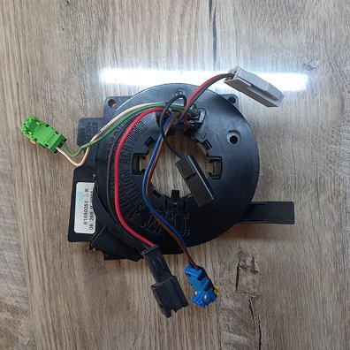
Підрульовий шлейф Renault Scenic 2 (Рено Сценік 2) з круїз
контролем/без круїз контролю.
Шлейфи підрульового перемикача для Renault Scenic 2. Відправлю
Вам вже готову виставлену в положення руля при рівних колесах
деталь (повністю перебрана, та усунуті вже моменти із-за яких
в основному рветься шлейф) в замін на Вашу зломану, касета з
новим шлейфом (шлейф Valeo). На деталь даю гарантію.
Ціна: 900 грн
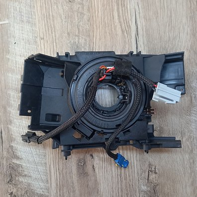
Підрульовий шлейф Renault Kangoo 2 / Kangoo 3(Рено Кенго 2 /
Кенго 3) з круїз контролем/без круїз контролю.
Шлейфи підрульового перемикача для Renault Kangoo 2 / Renault
Kangoo 3. Відправлю Вам вже готову виставлену в положення руля
при рівних колесах деталь (повністю перебрана, та усунуті вже
моменти із-за яких в основному рветься шлейф) в замін на Вашу
зломану, касета з новим шлейфом (шлейф Valeo). На деталь даю
гарантію. На авто з круїз контролем ціна 1000грн, на авто без
круїз контролю 850 грн. Ще власникам цих авто дуже рекомендую
звернути увагу на блок захисту правого підрульового перемикача
(поки він ще не згорів), дивіться у послугах нижче.
Ціна: 1000 грн/850 грн
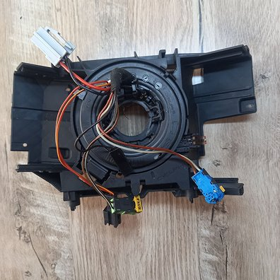
Підрульовий шлейф Renault Clio 3 / Renault Modus (Рено Кліо 3
/ Рено Модус) з круїз контролем/без круїз контролю.
Шлейфи підрульового перемикача для Renault Clio 3 / Renault
Modus. Відправлю Вам вже готову виставлену в положення руля
при рівних колесах деталь (повністю перебрана, та усунуті вже
моменти із-за яких в основному рветься шлейф) в замін на Вашу
зломану, касета з новим шлейфом (шлейф Valeo). На деталь даю
гарантію. На авто з круїз контролем ціна 1000грн, на авто без
круїз контролю 850 грн. Ще власникам цих авто дуже рекомендую
звернути увагу на блок захисту правого підрульового перемикача
(поки він ще не згорів), дивіться у послугах нижче.
Шлейфи підрульового перемикача для Renault Megane 3 / Scenic 3
/ Laguna 3. Відправлю Вам вже готову виставлену в положення
руля при рівних колесах деталь в замін на Вашу зломану, касета
з новим шлейфом (шлейф Valeo). На деталь даю гарантію.
Ціна: 1200 грн
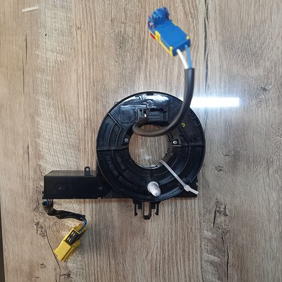
Підрульовий шлейф Renault Master 3 (Рено Мастер 3) Opel
Movano, Nissan NV400.
Шлейфи підрульового перемикача для Renault Master 3 Opel
Movano, Nissan NV400. Відправлю Вам вже готову виставлену в
положення руля при рівних колесах деталь в замін на Вашу
зломану, касета з новим шлейфом (шлейф Valeo). На деталь даю
гарантію.
Ціна: 1200 грн
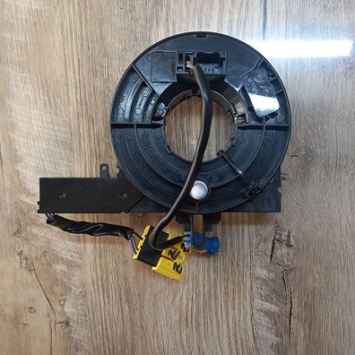
Підрульовий шлейф Renault ZOE (Рено Зоє).
Шлейфи підрульового перемикача для Renault ZOE. Відправлю Вам
вже готову виставлену в положення руля при рівних колесах
деталь в замін на Вашу зломану, касета з новим шлейфом (шлейф
Valeo). На деталь даю гарантію.
Ціна: 1400 грн
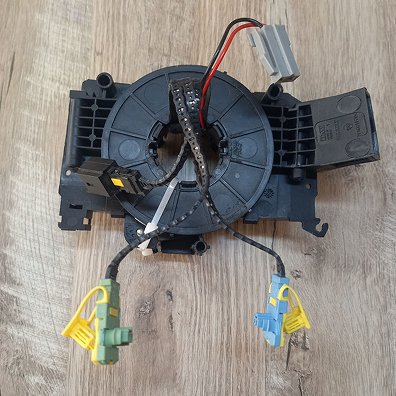
Підрульовий шлейф Renault Laguna 2 (Рено Лагуна 2), Renault
Espace 4 (Рено Еспейс 4).
Шлейфи підрульового перемикача для Renault Laguna 2 Renault
Espace 4. Відправлю Вам вже готову виставлену в положення руля
при рівних колесах деталь (повністю перебрана, та усунуті вже
моменти із-за яких в основному рветься шлейф) в замін на Вашу
зломану, касета з новим шлейфом (шлейф Valeo). На деталь даю
гарантію.
Ціна: 800 грн
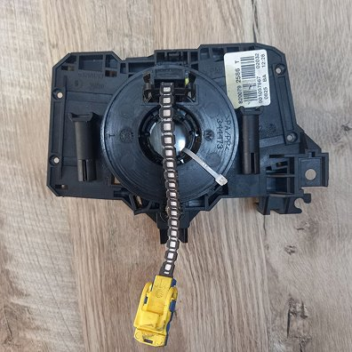
Підрульовий шлейф Renault Logan (Рено Логан), Renault Duster
(Рено Дастер)
Шлейфи підрульового перемикача для Renault Logan, Renault
Duster. Відправлю Вам вже готову виставлену в положення руля
при рівних колесах деталь (повністю перебрана, та усунуті вже
моменти із-за яких в основному рветься шлейф) в замін на Вашу
зломану, касета з новим шлейфом (шлейф Valeo). На деталь даю
гарантію.
Ціна: 700 грн
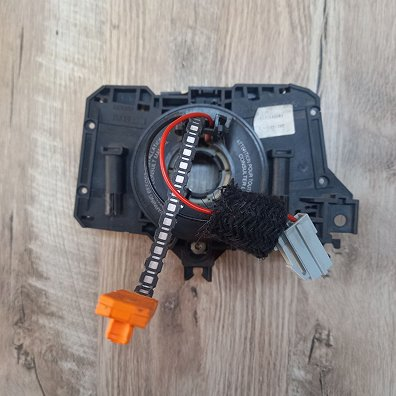
Підрульовий шлейф Renault Symbol Thalia (Рено Сімбол Таліа)
Шлейфи підрульового перемикача для Renault Symbol Thalia.
Відправлю Вам вже готову виставлену в положення руля при
рівних колесах деталь (повністю перебрана, та усунуті вже
моменти із-за яких в основному рветься шлейф) в замін на Вашу
зломану, касета з новим шлейфом (шлейф Valeo). На деталь даю
гарантію.
Ціна: 700 грн
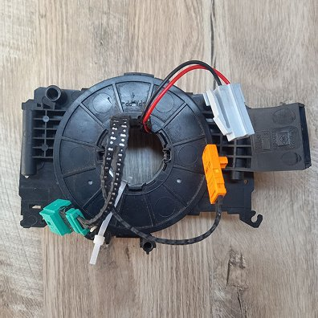
Підрульовий шлейф Renault Trafic 2 (Рено Трафік 2), Opel
Vivaro (Опель Віваро)
Шлейфи підрульового перемикача для Renault Trafic 2, Opel
Vivaro з круїз контролем та без. Відправлю Вам вже готову
виставлену в положення руля при рівних колесах деталь
(повністю перебрана, та усунуті вже моменти із-за яких в
основному рветься шлейф) в замін на Вашу зломану, касета з
новим шлейфом (шлейф Valeo). На деталь даю гарантію.
Ціна: 800 грн
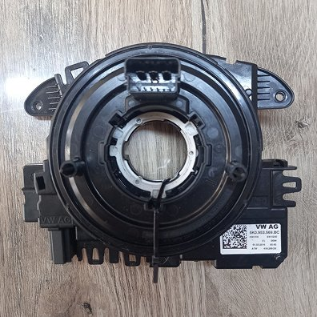
Підрульовий шлейф Wag Group Volkswagen (Фольксваген), Skoda
(Шкода) 5k0953569
Шлейфи підрульового перемикача для Wag Group Volkswagen
(Фольксваген), Skoda (Шкода) 5k0953569. Відправлю Вам вже
готову виставлену в положення руля при рівних колесах деталь в
замін на Вашу зломану, касета з новим шлейфом (шлейф Valeo).
Або, якщо не буде саме такої як Вам потрібна у наявності то
можу замінити шлейф на новий у Вашій рідній касеті. На деталь
даю гарантію.
Ціна: 1200 грн
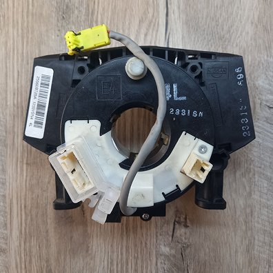
Підрульовий шлейф Nissan (Ніссан)
Шлейфи підрульового перемикача для Nissan. Відправлю Вам вже
готову виставлену в положення руля при рівних колесах деталь в
замін на Вашу зломану, касета з новим шлейфом (шлейф Valeo).
На деталь даю гарантію.
Ціна: 900 грн
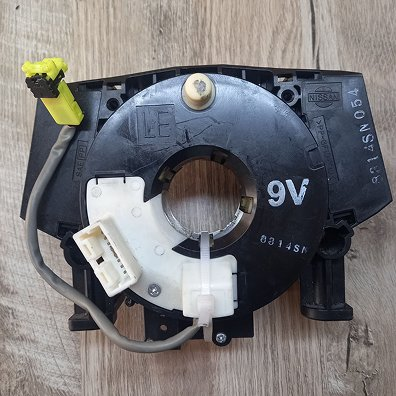
Підрульовий шлейф Nissan (Ніссан)
Шлейфи підрульового перемикача для Nissan. Відправлю Вам вже
готову виставлену в положення руля при рівних колесах деталь в
замін на Вашу зломану, касета з новим шлейфом (шлейф Valeo).
На деталь даю гарантію.
Ціна: 800 грн
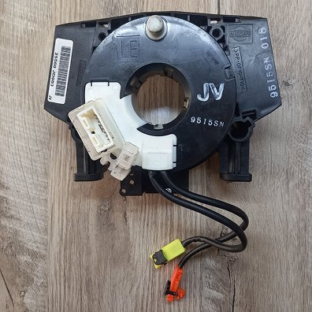
Підрульовий шлейф Nissan (Ніссан)
Шлейфи підрульового перемикача для Nissan. Відправлю Вам вже
готову виставлену в положення руля при рівних колесах деталь в
замін на Вашу зломану, касета з новим шлейфом (шлейф Valeo).
На деталь даю гарантію.
Шлейфи підрульового перемикача MR979369 для Mitsubishi Colt
2005-2008. Відправлю Вам вже готову виставлену в положення
руля при рівних колесах деталь в замін на Вашу зломану, касета
з новим шлейфом (шлейф Valeo). На деталь даю гарантію.
Шлейфи підрульового перемикача 8619A017 для Mitsubishi
Outlander 2003-2008 Mitsubishi Pajero Sport 2011-2015
Mitsubishi L200 2005-2014. Відправлю Вам вже готову виставлену
в положення руля при рівних колесах деталь в замін на Вашу
зломану, касета з новим шлейфом (шлейф Valeo). На деталь даю
гарантію.
Шлейфи підрульового перемикача Mr583930 для Mitsubishi Lancer
9 2003-2008. Відправлю Вам вже готову виставлену в положення
руля при рівних колесах деталь в замін на Вашу зломану, касета
з новим шлейфом (шлейф Valeo). На деталь даю гарантію.
Шлейфи підрульового перемикача 8619A018 для Mitsubishi Lancer
X 2006-2012 Mitsubishi Pajero IV2006-2014 Mitsubishi outlender
XL 2006-2012 Mitsubisi Galant 2006-2012 Mitsubishi Grandis.
Відправлю Вам вже готову виставлену в положення руля при
рівних колесах деталь в замін на Вашу зломану, касета з новим
шлейфом (шлейф Valeo). На деталь даю гарантію.
Ціна: 1000 грн
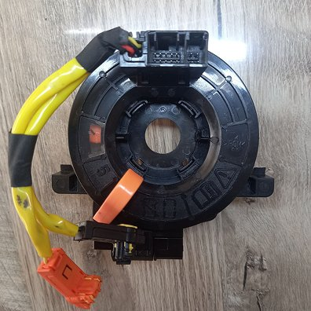
Підрульовий шлейф 84306-48030 Toyota (Тойота) Lexus (Лексус)
Шлейфи підрульового перемикача 84306-48030 для Toyota Lexus.
Підходить на моделі: TOYOTA CAMRY 2006-2011 - TOYOTA Corolla
2007-2012 - TOYOTA Land Crueser 2009-2018 - TOYOTA Avalon
2005-2012 - TOYOTA Highlander 2010-2012 - TOYOTA RAV4
2009-2012 - TOYOTA Tacoma 2005-2012 - TOYOTA Tundra 2007-2012
- LEXUS RX330/350 -Toyota Land Cruiser Prado (J150) 2009-2018.
Відправлю Вам вже готову виставлену в положення руля при
рівних колесах деталь в замін на Вашу зломану, касета з новим
шлейфом (шлейф Valeo). На деталь даю гарантію.
Ціна: 1300 грн
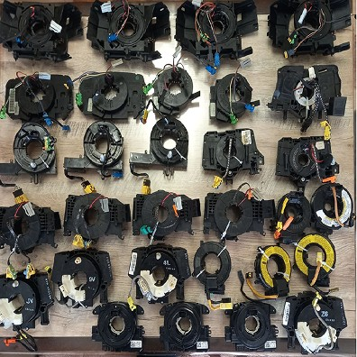
Підрульові шлейфи на різні автомобілі
Ремонт та заміна шлейфів на різні автомобілі. Якщо є
можливість відправити свою підрульову касету на ремонт то можу
спробувати її зробити, якщо підберу шлейф то можу зробити її
та відправити Вам зворотньо вже готову та виставлену в
положення руля при рівних колесах деталь, по терміну роботи -
один вечер. По ціні на кожне авто потрібно уточнювати
індивідуально по факту, все залежатиме від різновиду та
кількості шлейфа. Шлейф викороистовую Valeo. На зроблені
деталі даю гарантію.
Ціна: договірна
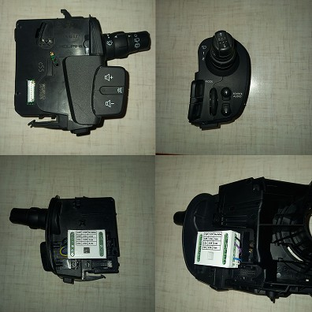
Підрульовий перемикач Renault Kangoo (Рено Кенго) Renault Clio
3 (Рено Кліо 3) Renault Modus (Рено Модус)
Продаж та відновлення правих підрульових перемикачів
(двірники/омивач) на автомобілі Рено Кенго, Кліо,
Модус.Можливе відновлення Вашого перемикача та встановлення
відразу на нього блоку захисту, щоб перемикач в подальшому
більше не згорів, на період відновлення відправлю Вам підмінну
деталь. Або можу відправити Вам вже готову зроблену деталь в
замін на Вашу яка вийшла з ладу. Якщо, раптом, Вже маєте
лишній колись згорівший перемикач, то можу у Вас купити його,
в залежності від стану згорання. За додатковою інформацією
звертайтеся, завжди радий допомогти.
Ціна: 1600 грн
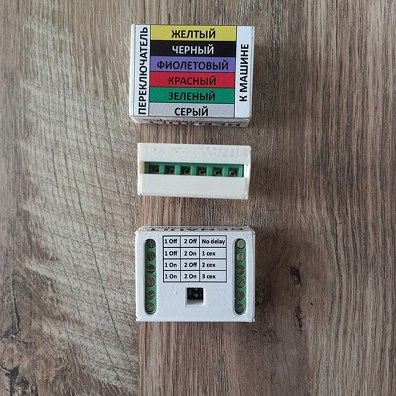
Блок захисту підрульового перемикача Renault Kangoo (Рено
Кенго) Renault Clio 3 (Рено Кліо 3) Renault Modus (Рено Модус)
Продаж блоку захисту від згорання, якщо у Вас ще перемикач не
згорів то саме час упередити це та поставити блок захисту. Це
блок захисту для правого перемикача двірників/омивачів, на цих
авто на перемикач завжди йде відносно великий струм від мотору
омивача і в будь-якому випадку, рано чи пізно, перемикач
згорає. Поки він ще живий та не згорів то рекомендую також
відразу поставити цей блок захисту і перемикач вже не згорить,
бо на нього буде йти лише імпульс, без високого струму, на
блок гарантія 3 роки, ставиться у розріз проводки перед
перемикачем, дуже просто інструкцію надам. І ще момент, у
блоці захисту є така корисна функція: коли бризкати на скло,
то щітки відразу спрацьовують і шкребуть на суху, а блоком цим
можна виставити затримку на 1,2 або 3 секунди, тобто вода
полилась, а щітки спрацюють тільки через виставлений Вами час.
І доречі, це не реле різні, які клацають потім у Вас у
салоні... За додатковою інформацією та консультацією
звертайтеся, буду завжди радий допомогти.
Ціна: 750 грн
Залиште свої контакти і ми обов'язково з Вами зв'яжемося в найкоротший
термін